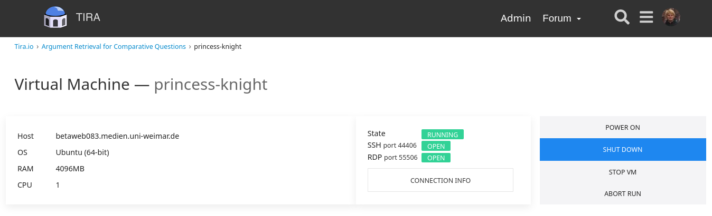
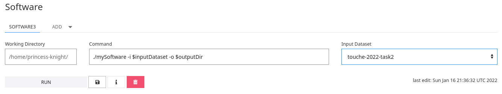
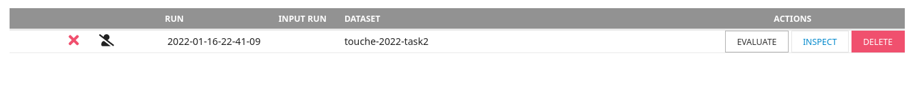

Argument Retrieval for Comparative Questions 2022
Synopsis
- Task: Given a comparative topic and a collection of documents, the task is to retrieve relevant argumentative passages for either compared object or for both and to detect their respective stances with respect to the object they talk about.
- Input: [data]
- Submission: [submit]
- Manual judgments (qrels, top-5 pooling): [relevance] [quality] [stance]
Task
The goal of Task 2 is to support users facing some choice problem from "everyday life". Given a comparative topic and a collection of documents, the task is to retrieve relevant argumentative passages for either compared object or for both and to detect their respective stances with respect to the object they talk about.
Data
Example topic for Task 2:
<topic>
<number>25</number>
<title>Which browser is better, Internet Explorer or Firefox?</title>
<description>A windows user wants to decide whether to use the default Internet Explorer or go for Firefox as alternative and seeks for information to compare them in multiple different aspects such as security and privacy, performance, ease of use, reliability, etc.</description>
<narrative>Highly relevant documents discuss in detail pros and cons of both web browsers by contrasting their characteristics and features. This comparison may contain technical details but also personal opinions. A relevant document may explicitly state what are the good/bad features of either the Internet Explorer or the Firefox browser without a clear comparison. Documents that include only descriptions of browser war or historical background how the browsers evolved, etc. are not relevant.</narrative>
</topic>The corpus for Task 2 is a collection of about 0.9 million text passages. [download]
Other data for this task are the topics, quality judgements, and for training a subset of MS MARCO with comparative questions and a collection of text passages expanded with queries generated using DocT5Query. [download] [topic parser]
Evaluation
Be sure to retrieve relevant documents that comprise convincing argumentation for or against one option or the other. Our human assessors will label the retrieved documents manually, both for their general topical relevance and for the rhetorical quality, i.e., "well-writtenness" of the document: (1) whether a document contains arguments (i.e., argumentative support is provided) and whether the text has a good style of speech (formal language is preferred over informal), (2) whether the text has a proper sentence structure and is easy to read and follow, whether it can be well understood, (3) whether it includes profanity, has typos, and makes use of other detrimental style choices.
Additionally, classify the stance of the retrieved text passages towards the compared objects in questions. For instance, in the question Who is a better friend, a cat or a dog? the terms cat and dog are the comparison objects. An answer candidate like Cats can be quite affectionate and attentive, and thus are good friends should be classified as pro the cat object, while Cats are less faithful than dogs as supporting the dog object.
The format of the relevance/quality judgment file:
qid 0 doc relqid: The topic number.0: Unused, always 0.doc: The document ID ("trec_id" if you use ChatNoir or the official ClueWeb12 ID).rel: The relevance judgment: 0 (not relevant) to 3 (highly relevant). The quality judgment: 0 (low, or no arguments) to 3 (high).
You can use the corresponding evaluation script to evaluate your run using the relevance judgments.
Submission
We encourage participants to use TIRA for their submissions to allow for a better reproducibility. Please also have a look at our TIRA quickstart—in case of problems we will be able to assist you. Even though the preferred way of run submission is TIRA, in case of problems you may also submit runs via email. We will try to quickly review your TIRA or email submissions and provide feedback.
Runs may be either automatic or manual. An automatic run must not "manipulate" the topic titles via manual intervention. A manual run is anything that is not an automatic run. Upon submission, please let us know which of your runs are manual. For each topic, include up to 1,000 retrieved documents. Each team can submit up to 5 different runs.
The submission format for the task will follow the standard TREC format:
qid stance doc rank score tagqid: The topic number.stance: The stance of the document (passage) toward the comparison objects (FIRST: pro 1st object, SECOND: pro 2nd object, NEUTRAL: neutral stance, NO: no stance).doc: The document (passage) IDqid.rank: The rank the document is retrieved at.score: The score (integer or floating point) that generated the ranking. The score must be in descending (non-increasing) order. It is important to handle tied scores.tag: A tag that identifies your group and the method you used to produce the run.
Q0 as the value in the stance column. The fields should be separated by a whitespace. The individual columns' widths are not restricted (i.e., score can be an arbitrary precision that has no ties) but it is important to include all columns and to separate them with a whitespace.An example run for Task 2 is:
1 FIRST clueweb12-en0010-85-29836___1 1 17.89 myGroupMyMethod
1 NEUTRAL clueweb12-en0010-86-00457___3 2 16.43 myGroupMyMethod
1 NO clueweb12-en0010-86-09202___5 3 16.32 myGroupMyMethod
...TIRA Quickstart
Participants have to upload (through SSH or RDP) their retrieval models in a dedicated TIRA virtual machine, so that their runs can be reproduced and so that they can be easily applied to different data (of same format) in the future. You can find host ports for your VM in the web interface, same login as to your VM. If you cannot connect to your VM, please make sure it is powered on: you can check and power on your machine in the web interface where you see the state of your VM and can access the connection informations on how to access your VM.
Your software is expected to accept two arguments:
- An input directory (named
$inputDatasetin TIRA). This input directory contains atopics.xmlfile that contains the topics for which documents should be retrieved and apassages.jsonl.gzthat contains the passages. - An output directory (named
$outputDirin TIRA). Your software should create a standard trec run file in$outputDir/run.txt.
my-software.sh which expects an argument -i specifying the input directory, and an argument -o specifying the output directory. Click on "Add software" and specify the command ./my-software.sh -i $inputDataset -o $outputDir. Please select `touche-2022-task2` as input dataset.

Please save your software and click on "Run" to execute your software in TIRA. Note that your VM will not be accessible while your system is running – it will be “sandboxed”, detached from the internet, and after the run the state of the VM before the run will be restored. Your run will be reviewed and evaluated by the organizers.
NOTE: By submitting your software you retain full copyrights. You agree to grant us usage rights for evaluation of the corresponding data generated by your software. We agree not to share your software with a third party or use it for any purpose other than research.
Once the run of your system completes, please also run the evaluator on the output of your system to verify that your output is a valid submission. These are two separate actions and both should be invoked through the web interface of TIRA. You don’t have to install the evaluator in your VM. It is already prepared in TIRA. You can run the evaluator in the overview of your runs by clicking on the "Evaluate" button.
By Clicking on "Inspect" you can see and download the STDOUT and STDERR as well as the outputs of your system. The output of the evaluator will tell you if the output of your run valid. If you think something went wrong with your run, send us an e-mail or open a new Topic in the Touché Forum in TIRA. Additionally, we review your submissions and contact you on demand.
You can register more than one system (“software/ model”) per virtual machine using the web interface. TIRA gives systems automatic names “Software 1”, “Software 2” etc. You can perform several runs per system.
Results
| Team | Tag | Mean nDCG@5 | CI95 Low | CI95 High |
|---|---|---|---|---|
| Captain Levi | levirank_dense_initial_retrieval | 0.758 | 0.708 | 0.810 |
| Aldo Nadi | seupd2122-kueri_rrf_reranked | 0.709 | 0.649 | 0.769 |
| Katana | Colbert edinburg | 0.618 | 0.551 | 0.676 |
| Captain Tempesta | hextech_run_1 | 0.574 | 0.504 | 0.640 |
| Olivier Armstrong | tfid_arg_similarity | 0.492 | 0.414 | 0.569 |
| Puss in Boots | BM25-Baseline | 0.469 | 0.403 | 0.538 |
| Grimjack | grimjack-fair-reranking-argumentative-axioms | 0.422 | 0.351 | 0.496 |
| Asuna | asuna-run-5 | 0.263 | 0.202 | 0.324 |
| Team | Tag | Mean nDCG@5 | CI95 Low | CI95 High |
|---|---|---|---|---|
| Aldo Nadi | seupd2122-kueri_RF_reranked | 0.774 | 0.719 | 0.828 |
| Captain Levi | levirank_dense_initial_retrieval | 0.744 | 0.690 | 0.804 |
| Katana | Colbert trained by me | 0.644 | 0.575 | 0.707 |
| Captain Tempesta | hextech_run_5 | 0.597 | 0.523 | 0.674 |
| Olivier Armstrong | tfid_arg_similarity | 0.582 | 0.506 | 0.662 |
| Puss in Boots | BM25-Baseline | 0.476 | 0.401 | 0.556 |
| Grimjack | grimjack-fair-reranking-argumentative-axioms | 0.403 | 0.330 | 0.478 |
| Asuna | asuna-run-5 | 0.332 | 0.254 | 0.418 |
| Team | Tag | F1_macro_run | N_run | F1_macro_team | N_team |
|---|---|---|---|---|---|
| Grimjack | grimjack-all-you-need-is-t0 | 0.313 | 1208 | 0.235 | 1386 |
| Captain Levi | levirank_dense_initial_retrieval | 0.301 | 1688 | 0.261 | 2020 |
| Katana | Colbert edinburg | 0.229 | 1027 | 0.220 | 1301 |
| Olivier Armstrong | tfid_arg_similarity | 0.191 | 551 | 0.191 | 551 |
| Puss in Boots | Always-NO-Baseline | 0.158 | 1328 | 0.158 | 1328 |
| Asuna | asuna-run-5 | 0.106 | 578 | 0.106 | 578 |